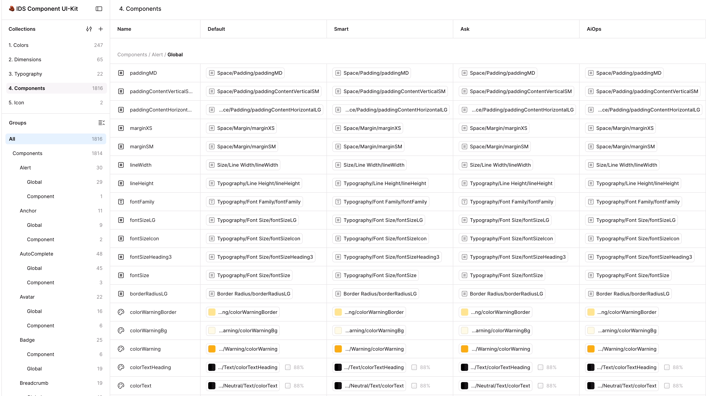

01 / 统一不是合并
统一之前，先决定边界
做 Infra Design SystemInfra Design System（基础设施设计系统），简称 InfraD。由设计与前端共同建设维护，连接组件、业务模式、页面模板、使用指南与 Design Tokens，支持多业务主题及持续演进。 时，最常面对的问题不是「要不要统一」，而是「统一到哪里」：同样叫表格，有的帮人定位资源，有的用来比较安全策略，有的核查执行结果。外观接近，只是进一步分析的起点。
2021 年那会儿，深圳的 SC Guideline、新加坡基于 Ant Design广泛使用的 React 组件体系；InfraD 的基础组件基于它统一，保留交互、调整颜色与圆角。 的规范、STC 的另一套资产同时在用。同年 10 月，我们定下方向：统一基于 Ant Design 原生基础组件，维护同一份文件，保留它的交互，调整颜色与圆角，按需扩展业务组件。统一不是把三套拼成一套，而是先决定哪些是公共的、哪些留给业务。
02 / 全局语义与局部例外
全局和局部，分开配置
升级 Token 时，同样的问题又出现一次：全局的语义和组件的局部例外，必须分开配置，而不是全部塞进同一条链。
- 全局语义 · 通用圆角
- Default · Space 2，Smart 8，Ask 8，AIOps 6
- 组件默认
- 组件引用语义变量，不写死数值
- 局部例外 · Tag 圆角
- Smart 4，Ask 16，AIOps 4
Infra Design System · Figma 组件变量实录局部

这样产品能沿用共同基础、同时拥有自己的主题；把一切差异都塞进同一个参数，最后谁都用不明白。
后来支持 DataSuiteShopee Data Infrastructure（数据基础设施）建设的平台，覆盖数据接入、开发、调度、分析与治理。，起点又不一样：平台已经成型，不同产品混着不同版本的 Ant Design，老旧和定制实现并存。我们走的是渐进的路：有设计师支持的业务范围采用新的资产和方式，没有新设计需求的部分保持原状。主题适配能力、部分业务使用、全产品线迁移，是三件不同的事。
03 / 边界要让别人用得起
把边界画给别人看
组件发布以后，工作没有结束。我持续维护 Design Guide，把选择依据、组合方式和场景说明放在查阅资产的入口：一个人找到组件之后，还要能判断适不适合当前任务，遇到例外该从哪里继续。
统一从来不是终点。边界画清楚了，剩下的东西才真正能被复用——后面的人找得到、用得明白，遇到差异时还能继续扩展。
相关文件涉及企业内部信息，可在面试交流中结合脱敏处理后的材料展开介绍。